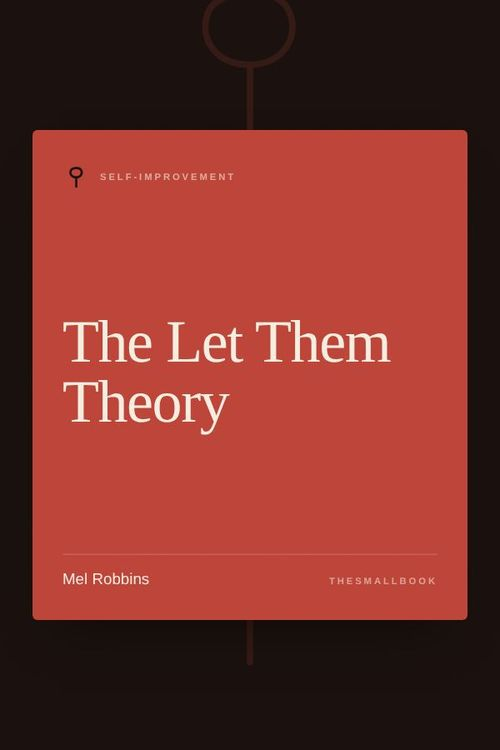
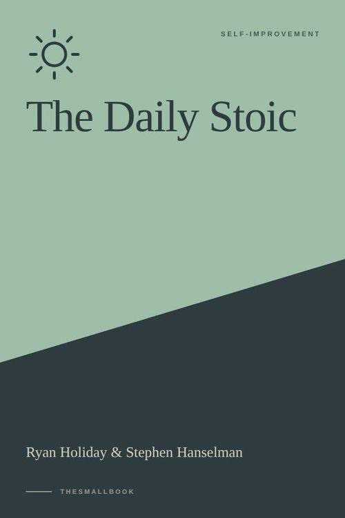

Library › Ask the Library › How do I stop comparing myself to others?
How do I stop comparing myself to others?
The short answer
Comparison is a compass, it tells you what you actually want, then you put it down. Compare yourself to yesterday, and audit the story your feed is feeding you.
The books behind the answer

The Let Them Theory
Mel Robbins · 2024 · 9 min · 7 lessons
Let them do what they do. Then let ME decide what I do about it. That's the whole theory - and it changes everything.
- Comparison and Envy Are Compasses: Envy points at what you want. Read the compass, then get back to your own lane.

The Daily Stoic
Ryan Holiday & Stephen Hanselman · 2016 · 8 min · 6 lessons
One page of ancient wisdom per day: control what you can, accept what you can't, and turn every obstacle into curriculum.
- The Dichotomy of Control: Other people's wins are outside your control. Sort it out of your head and put the energy back in yours.

Psycho-Cybernetics
Maxwell Maltz · 1960 · 11 min · 8 lessons
You will never outperform your self-image. Upgrade the image, and the results upgrade themselves.
- The Self-Image: Your Life's Thermostat: You steer toward the self-image you hold. Comparing breaks the thermostat, reset it to your own standard.

The Subtle Art of Not Giving a F*ck
Mark Manson · 2016 · 9 min · 7 lessons
The desire for more positive experience is itself a negative experience. Choose your struggles instead of avoiding them.
- Choose Better Values: If your values are external (status, applause), comparison is eternal. Choose process values, they're never stolen.
Questions people ask next
Can I read this in Hindi?
Yes. This answer is written in simple English. Open any linked book and choose Hindi or Hinglish to read the full lessons in your language, with audio where available.